9. Assessing the effect of a new Light Rail Transit line in the Tel-Aviv Metropolitan Area
Spanning approximately 1,500 sq. km, the Tel Aviv Metropolitan Area (TAMA) encompasses over a dozen cities alongside numerous smaller settlements. As of 2026, the metropolitan population stands at roughly 4.3 million, distributed across approximately 252,000 buildings. This section demonstrates how to use the Accessibility Calculator to assess the impact of the new “Red” Light Rail Transit (LRT) line on transport accessibility in TAMA. The line initiated service in late 2023 and became fully operational in 2024. Figure 1 below displays the TAMA road network and the alignment of the Red LRT line.
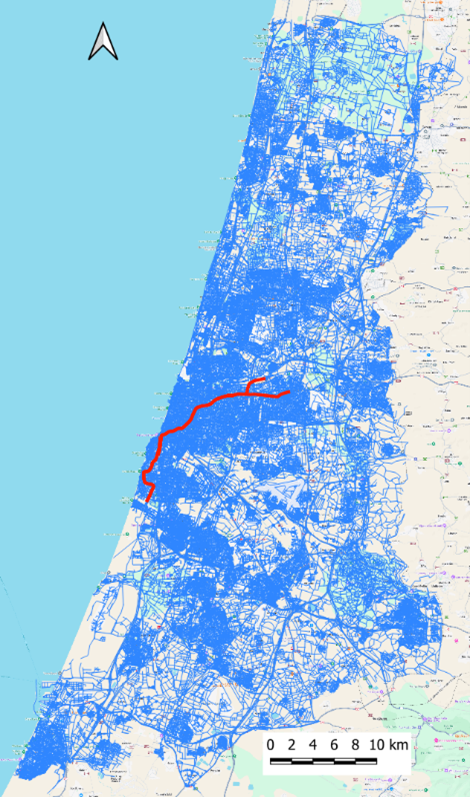
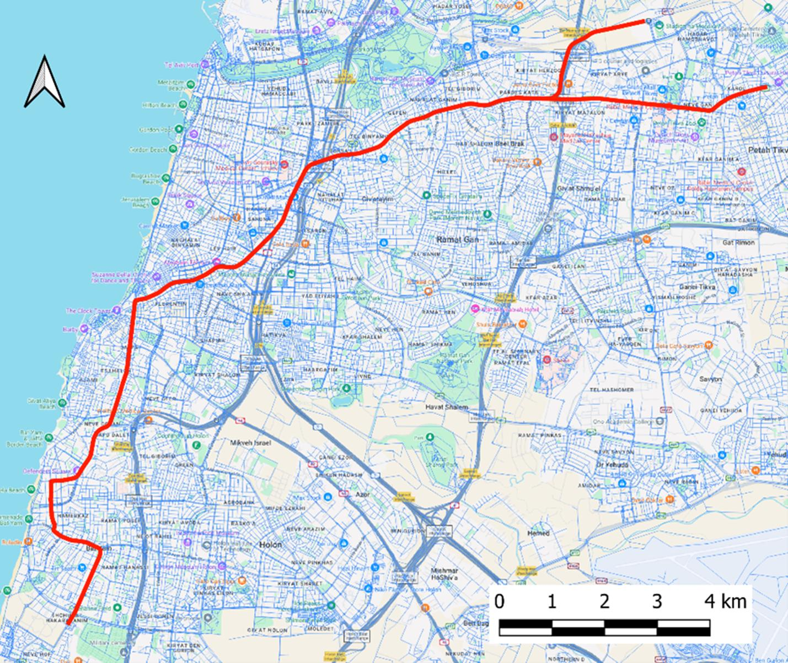
Figure 1. The TAMA road network (a), and a zoomed-in view of the area served by the Red LRT line (b).
All examples presented in this section were computed using the Accessibility Calculator Plugin v7.0 within QGIS v3.44.8. The computations were performed on a Lenovo ThinkPad X1 laptop equipped with an Intel i7 2.80GHz processor and 32 GB of RAM. To provide a practical performance benchmark for users, many examples are accompanied by its estimated computing time.
9.1. Data arrangements
To evaluate TAMA’s transport accessibility with and without the Red LRT line, we utilize TAMA OSM layers (buildings and roads) from 2024 alongside two Israeli GTFS datasets, covering all country transit lines (buses and trains) and representing the years 2018 and the end of the 2024. For this analysis, we assume the physical infrastructure of buildings and roads remained relatively static between 2018 and 2024 and use the roads of 2024 in both cases.
The road link and building layers were extracted from the national OSM Israel dataset (downloaded in June 2024) by selecting features located “entirely within” the TAMA polygon (Figure 1a).
To isolate the effects of the Red LRT line, we utilize two separate GTFS datasets covering all of Israel. In this tutorial, we explicitly use the full, national Israeli GTFS datasets for all computations, regardless of the localized geographic extent of the road and building layers. The 2018 GTFS dataset was sourced from https://openmobilitydata.org/p/ministry-of-transport-and-road-safety/820/20180711, and the 2024 dataset was sourced from https://s3.gtfs.pro/files/sourcedata/israel-public-transportation.zip.
The OSM layers of roads and buildings for TAMA were topologically cleaned and you can either start with the initial layers and perform cleaning yourself or go straight to accessibility computations with the cleaned layers. The complete datasets are provided here as downloadable zip files in two versions, before and after the topological cleaning. As a reminder, topological cleaning for roads involves splitting intersecting links at junctions, snapping link extremities together, and removing duplicates. For buildings, cleaning involves deleting internal polygon holes and “flattening” the layer by resolving overlapping polygons. Essentially smaller road and building datasets for Tel Aviv city are provided here for faster tests, also in two versions - one before and one after the topological cleaning. The major characteristics of the utilized datasets are presented in Table 1.
Database |
Type |
Number of features |
Size (MB) |
|---|---|---|---|
TAMA Buildings |
Shape |
252,364 |
147 |
TAMA Roads |
Shape |
301,230 |
120 |
Israel GTFS 2018 |
Dataset |
757 |
|
Israel GTFS 2024 |
Dataset |
1,150 |
Table 1. Characteristics of the TAMA spatial layers and the Israeli GTFS datasets.
Note
We strongly advise against manually cropping or cutting GTFS datasets. This operation requires extreme care, and any potential computational performance gains achieved by using a geographically smaller GTFS database are highly insignificant.
The entire process of topological cleaning and construction of the databases for the complete TAMA dataset takes approximately 1.5 hours. Processing the smaller Tel Aviv dataset (even while utilizing the full 2024 national GTFS) takes only about 15 minutes. We highly recommend executing the entire data preparation workflow using the Tel Aviv dataset first and then comparing the roads and building layers before and after cleaning. This allows you to verify the expected changes in the road and building layers before scaling up to your primary data.
Note
Be aware that minor structural differences can occasionally exist between GTFS datasets from different countries, different years, or even different transit agencies. We have rigorously tested the Accessibility Calculator against numerous GTFS versions, but variations may still occur. Please let us know if you encounter any specific error messages during the transit routing database construction stage. during this phase when the GTFS dataset is actively parsed.
For this tutorial, the initial road and building layers are located in the TAMA_tutorial/Source_layers folder. The cleaned road and building layers are saved in TAMA_tutorial/Roads and TAMA_tutorial/Buildings, respectively, while TAMA_tutorial/Visualization is reserved for the visualization layers.
The two raw GTFS datasets are stored in TAMA_tutorial/gtfs2018 and TAMA_tutorial/gtfs2024. Consequently, we store their generated transit routing databases in TAMA_tutorial/gtfs2018DB and TAMA_tutorial/gtfs2024DB.
Finally, the car routing database is stored in the TAMA_tutorial/cars folder.
Note
If you prefer to use your own folder hierarchy, we strongly recommend establishing it before initiating the data cleaning and database construction processes.
9.2. Data preprocessing
To proceed with the Accessibility Calculator, the user must first clean the building and road layers. These processes are detailed in the Data Preprocessing section of this tutorial. Let us walk through the steps of the data preparation procedure:
Navigate to the Data preprocessing → Clean road network menu item and select the appropriate road layer (Figure 2). This layer must be a part of the current QGIS project.
Specify the destination folder and a name for the clean road network.
Please note that road layer cleaning is computationally intensive; processing the TAMA road layer, with its approximately 300,000 links, takes about 20 minutes.

Figure 2. Clean road network dialog
Cleaning layer of buildings
Navigate to the Data preprocessing → Clean layer of buildings menu item and select the appropriate building layer (Figure 3). This layer must be a part of the current QGIS project.
Specify the folder and name for the cleaned building layer. You may use the same folder utilized for the cleaned road layer.
Cleaning the building layer is significantly faster than processing roads; cleaning approximately 250,000 TAMA buildings takes only about 5 minutes.

Figure 3. The Clean layer of buildings dialog
9.3. Preparing TAMA databases
The next step is to use the newly cleaned road and building layers, alongside the two GTFS datasets, to construct three routing databases: two for transit routing (representing 2018 and 2024) and one for car routing. Then, the visualization layers must be constructed. The underlying principles of this construction process are described in detail in Section 5 (Prepare databases). In this tutorial we will not employ the options of adding lines to GTFS or deleting lines. Let us start by constructing the transit routing database for 2018.
Navigate to the Prepare databases → Transit routing database menu item and select the cleaned layers of roads and buildings (Figure 4).
Specify a new destination folder to store this transit database (e.g.,
TAMA_tutorial/gtfs2018DB).The transit routing database construction for TAMA takes approximately 15 minutes.
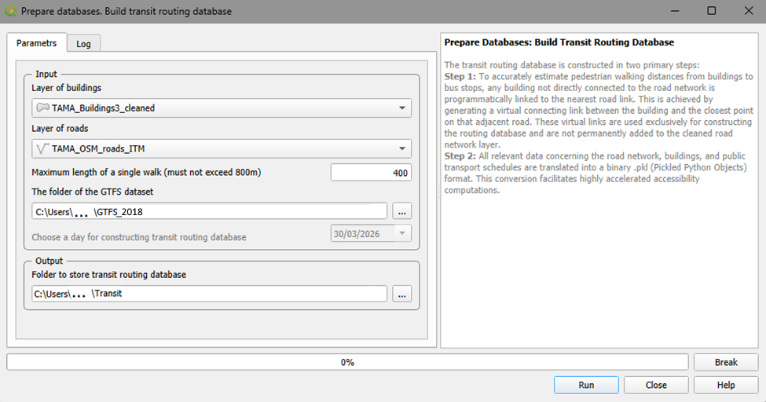
Figure 4. The Transit routing database dialog
Once the 2018 database is complete, repeat this exact process using the 2024 GTFS dataset to generate the 2024 transit routing database. The final data preparation step is to construct a database for car routing. Before you do this, review the tables for average car speeds (by link type) and the congestion delay index; you can edit these values if necessary. If you are interested in comparing accessibility across different car speeds or congestion levels during the day, you must build a separate car routing database for each specific set of parameters.
Navigate to the Prepare databases → Car routing database menu item and select the cleaned layers of roads and buildings (Figure 5). Carefully ensure that the correct attribute fields are selected for the link’s speed, link type, and traffic direction.
Specify a new destination folder to store the car routing database (e.g.,
TAMA_tutorial/cars).
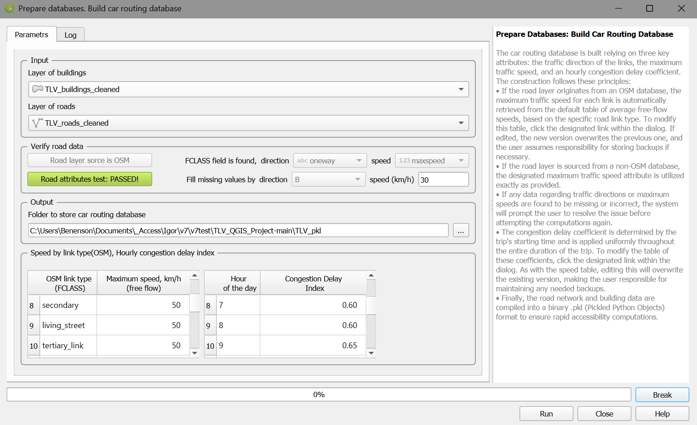
Figure 5. Car routing database dialog
A log file documenting all the data utilized for the TAMA car routing database construction is automatically saved in the database folder. Table 2 presents the characteristics and processing times of all three constructed databases. Notably, the compiled databases are are substantially smaller—often half the size of their raw source files.
Dataset |
Construction time (mins) |
Source files total size (MB) |
Dataset size (MB) |
|---|---|---|---|
CAR |
2:11 |
267 |
194 |
PT2018 |
16:43 |
1,125 |
430 |
PT2024 |
26:21 |
1,417 |
595 |
Table 2. The characteristics of the three constructed TAMA routing databases.
Build visualization layers
Navigate the Data preprocessing → Build visualization layers menu item and select the cleaned layer of buildings (Figure 6).
Specify the destination folder where the generated visualization layers will be saved.
Building these visualization layers takes approximately 2–3 minutes.

Figure 6. Build visualization layers dialog
Summing up, for an area the size of TAMA, the complete data preprocessing stage will take up to an hour and a half. The vast majority of this time is dedicated to the topological cleaning of the road and building layers. While it is technically possible to calculate accessibility with layers that have not been topologically cleaned, we strongly recommend performing this cleaning step to guarantee the absolute correctness and reliability of the navigation algorithms during all subsequent accessibility computations.
9.4. Transit accessibility, service area maps
To illustrate the plugin’s service area computations in a real-world scenario, we examine the effect of the RED LRT line on transit accessibility of the Gesher Theater, located in the Jaffa region of Tel Aviv city.
9.4.1. Transit accessibility, fixed-time arrival/departure
Let us estimate the theater’s transit accessibility for visitors arriving for a performance at 20:00, as well as their ability to return home when the performance concludes at 22:30. In formal terms, we treat the theater as a single destination facility and assess its (1) TO-accessibility at 20:00, alongside (2) FROM-accessibility at 22:30 and (3) ROUNDTRIP accessibility for the times close to the performance’s start and end. Executing these accessibility computations requires defining threshold parameters of the travelers’ behavior. The following assumptions are applied to all three above examples:
Maximum walk distance
from the origin building to the first stop = 400 m
at the transfer (between stops) = 200 m
from the destination stop to the destination building = 400 m
Maximum waiting time
at the initial stop = 10 min
at the transfer stop = 5 min
Number of transfers between 0 and 1
Average walking speed = 3.0 km/h
Maximum travel time = 45 min
In addition to these behavioral thresholds, we must set the target times: an arrival time of 20:00 for the TO-accessibility calculation, a departure time of 22:30 for the FROM-accessibility calculation and the periods of 19:30 – 20:00 of arrival and 22:30 – 23:00 for departure for the ROUNDABOUT accessibility calculations. Upon completion, the plugin joins the primary results file to the active visualization layer to render the thematic map. Figure 7 presents four TO- and FROM- accessibility maps for the Gesher Theater for two scenarios representing the network before the Red LRT line was introduced (2018), and two representing the network after its integration (2024). Once the routing databases were built, each individual scenario took only 2–3 seconds to compute. Visually, you can immediately observe that the geographic area accessible within a 45-minute transit trip expanded significantly after the Red LRT line became operational. We will compare the 2018 and 2024 accessibility maps and explicitly assess the Red line’s impact in the Compare Accessibility Maps section later in this tutorial.
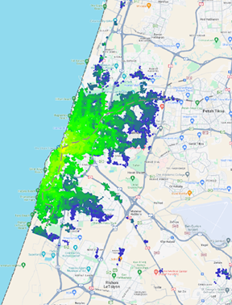
a
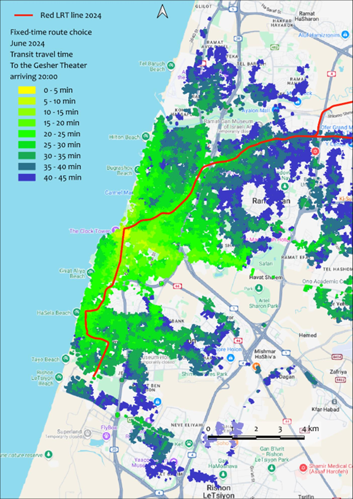
b
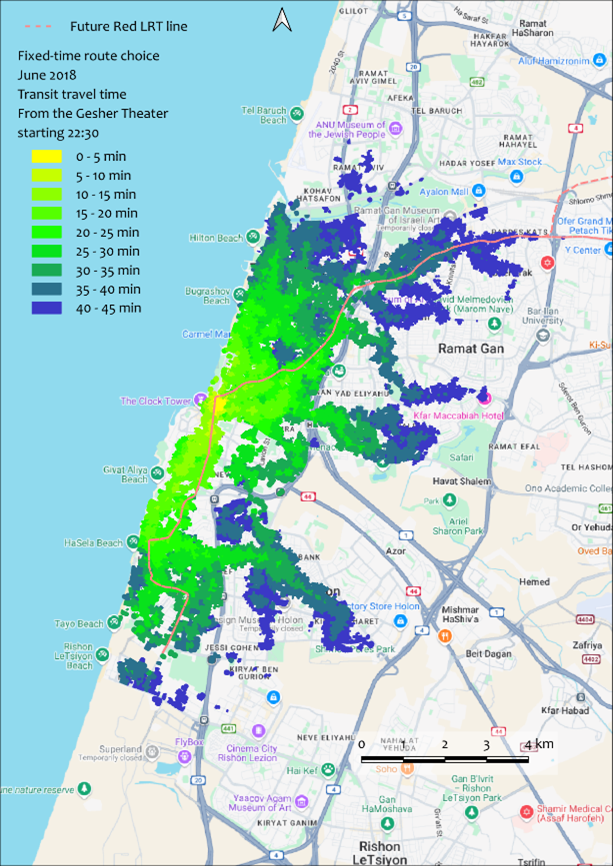
c
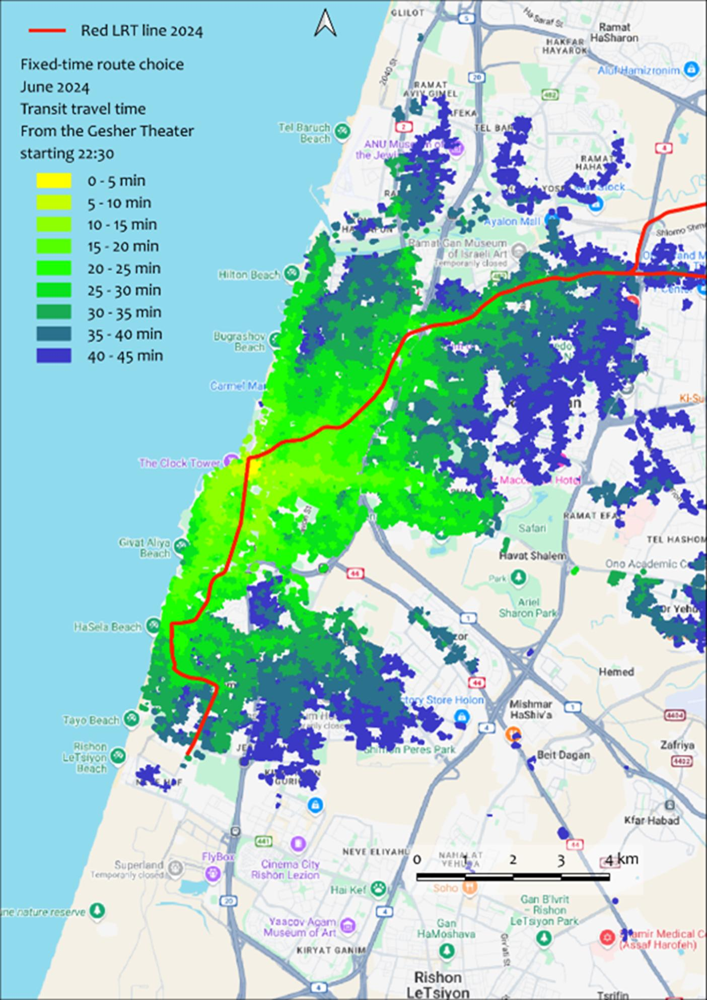
d
Figure 7. The results of the Transit accessibility → Service area maps → Fixed Arrival/Departure time computations of the Gesher Theater in Yafo. TO service locations at 20:00, in 2018 (a) and 2024 (b). FROM service locations at 22:30, in 2018 (c) and 2024 (d)
9.4.2. Transit accessibility, schedule-based arrival/departure time
As a reminder, schedule-dependent accessibility models consider informed travelers who consult transit timetables and choose the bus departure to arrive at the destination as close as possible to the demanded hour, timing their departure from home to coincide with the arrival of their chosen vehicle at the initial stop, or looking for the fastest travel alternative. Because schedule-based travel time effectively eliminates the initial waiting period at the first stop, the resulting accessibility metrics are generally higher than those produced by fixed-time calculations, as the actual trip can organically shift within a defined window of flexibility. The algorithm optimizes the journey within this window, utilizing the traveler’s temporal flexibility as an additional computational parameter. To illustrate schedule-based accessibility for the Gesher Theater, consider the following scenario: A photo exhibition is hosted in the theater foyer before the 20:00 performance, and visitors are willing to arrive at any point between 19:30 and 20:00 to view the exhibit. Furthermore, the theater café remains open long after the show concludes at 22:30. Visitors might purposefully choose to stay for a cup of tea, delaying their journey home by 15 or so minutes to avoid the immediate crowd and secure a seat on the bus. These behavioral conditions dictate the specific parameters for our computation: namely, the earliest acceptable arrival time and the permissible arrival interval for the inbound trip (Figure 8), alongside the earliest departure time and the permissible departure interval for the outbound trip (Figure 9).
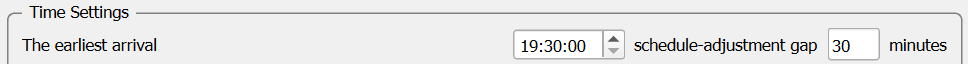
Figure 8. The arrival time configuration for the Transit accessibility maps, TO- Schedule-based accessibility dialog.
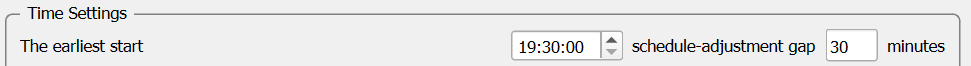
Figure 9. The departure time configuration for the Transit accessibility maps, FROM- Schedule-based accessibility dialog.
Figure 10 presents four maps illustrating the fastest trips for schedule-based accessibility to and from the Gesher Theater, comparing the 2018 transit network against the 2024 network (when the Red LRT line became fully functional). Each of these scenarios took 5–8 seconds to compute. Consistent with the fixed-time routing results, the geographic areas accessible within a 45-minute maximum trip time are noticeably larger in 2024 following the introduction of the Red LRT line. We will quantitatively assess the Red line’s impact on these schedule-informed users in the Compare Accessibility Maps section later in this tutorial.
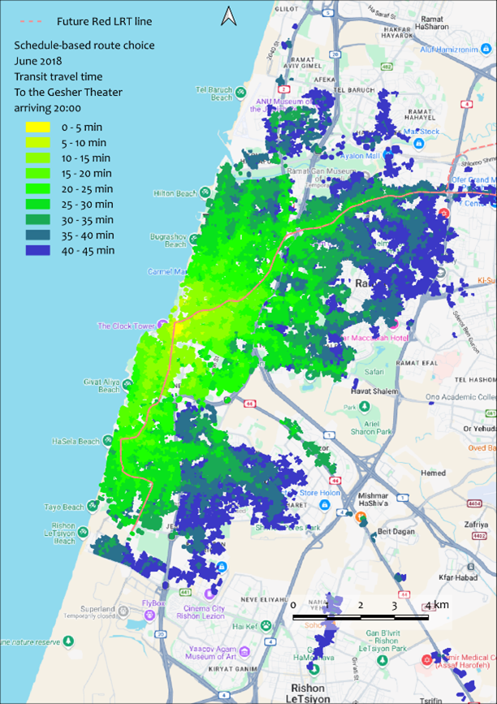
a
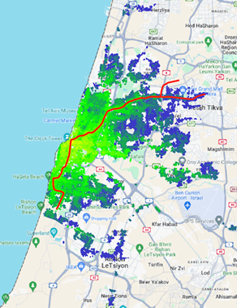
b
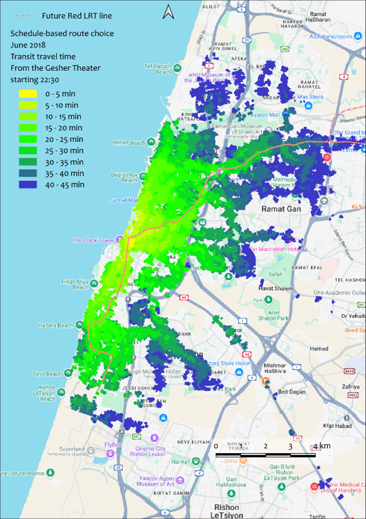
c
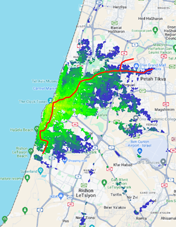
d
Figure 10. The results of the Transit accessibility maps → Schedule-dependent departure/arrival computations for the Gesher Theater in Yafo. TO-Accessibility (Schedule-based arrival at 20:00) in 2018 (a) and 2024 (b). FROM-Accessibility (Schedule-based departure at 22:30) in 2018 (c) and 2024 (d).
9.4.3. CAR accessibility
Car accessibility computations require fewer parameters than transit-based calculations, and the concept of schedule-based accessibility is completely irrelevant here. However, accurately assessing car travel time demands knowledge of the actual traffic speed along the route, which is notoriously difficult information to obtain. Currently, the most systematic source for real-time traffic speeds is the Google API , and we plan to integrate car accessibility calculations with Google’s traffic speed data in a future version of the Accessibility Calculator. For the current version, to calculate CAR accessibility, we assume that the average speed on a road link for the investigated hour of the day is either:
Already known to the user and explicitly stored as an attribute of the road link.
Defined by the OSM link’s type (e.g., highway, residential) combined with a congestion multiplier specific to the hour of travel.
A table of characteristic free-flow speeds tied to the standard OSM classification of links is supplied with the plugin. This table is named Car_speed_by_link_type.csv and can be freely edited by the user. (For more details regarding the structure and use of this table, please refer to Section 5.4).
To demonstrate a car service area map, we will calculate the car accessibility of the Gesher Theater in Yafo. Similar to our transit example, we calculate the TO-accessibility for a performance starting at 20:00, and the FROM-accessibility when the performance concludes at 22:30.
As expected, the resulting maps for the Gesher Theater’s car accessibility (Figure 11) exhibit much smoother, simpler contours than those generated for public transport accessibility.
It is worth noting, however, that the car accessibility FROM the theater at 22:30 (when evening congestion has largely dissipated) is significantly higher than the car accessibility TO the theater at 20:00 (when moderate evening congestion is still present). Overall, for both the 20:00 and 22:30 time slots, the area accessible with the car is substantially larger than the area accessible with the public transit.
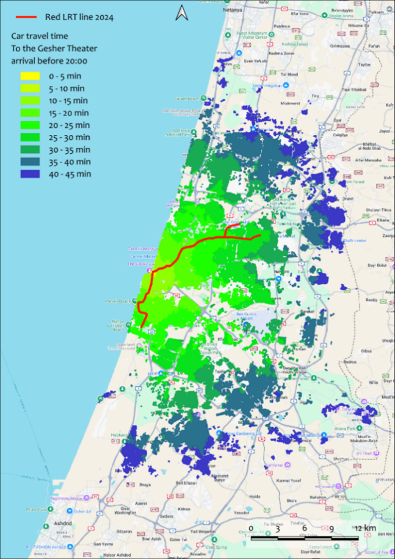
a
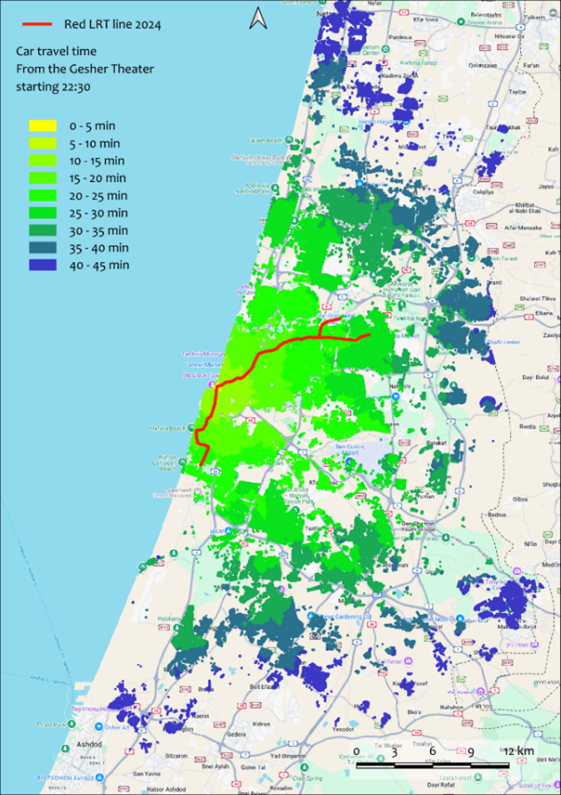
b
Figure 11. Car accessibility to the Gesher Theater at 20:00 (a), when evening congestion is still present, and from the theater at 22:30 (b), when congestion has largely dissipated.
9.5. Cumulative number of opportunities accessible with public transport
While service area maps evaluate the accessibility of specific facilities, major infrastructure changes often affect entire regions simultaneously. The Cumulative opportunities computations within the Accessibility Calculator assess these broad, systemic effects by calculating the accessibility metrics for every single building within a designated region. The default measure for this analysis is the total number of buildings that can be accessed within a maximum trip time:
FROM-accessibility: Calculates the number of destination buildings that can be accessed from each origin building in the region.
TO-accessibility: Calculates the number of origin buildings from which each destination building in the region can be accessed.
The cumulative number of opportunities is calculated using a user-defined time resolution (typically in 5-minute bins). This means the plugin calculates the number of buildings or total number of other opportunities, like jobs, accessible within 5, 10, 15 minutes, and so on, up to the maximum trip time. In the example below, we analyze the shifting transport landscape in Tel Aviv between 2018 and 2024, evaluating the overall changes in transit accessibility provided by the Red LRT line. For the demonstrations below, we utilize the default measure: the number of accessible buildings, while beyond simple building counts, you can compute the cumulative number of opportunities based on any available numerical attribute (Figure 12). The plugin will calculate the sum of this attribute’s values across all accessible buildings. As a reminder, if your specified maximum travel time does not divide perfectly into an integer number of bins, the plugin will automatically store a final result column exactly at the maximum travel time limit.
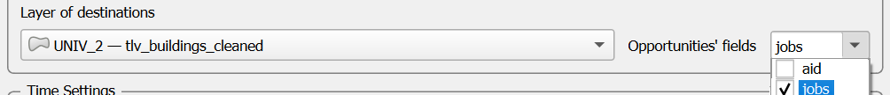
Figure 12. The configuration for selecting the attributes to aggregate within the Transit accessibility computations → Cumulative opportunities maps dialog.
Figure 13 presents maps detailing the total number of buildings accessible within a 45-minute transit trip FROM each location starting at 8:00 in the morning across Tel Aviv in 2018 compared to 2024. To significantly speed up these region-wide computations, the maps were generated using an aggregated 200m hexagon grid rather than individual building polygons. The 1,750 hexagons of this size successfully cover all buildings in Tel Aviv. By aggregating the origins to these hexagons, the computation time was reduced to approximately 40 minutes (less than 2 seconds of processing time per origin). We will compare these two maps numerically in the following section.
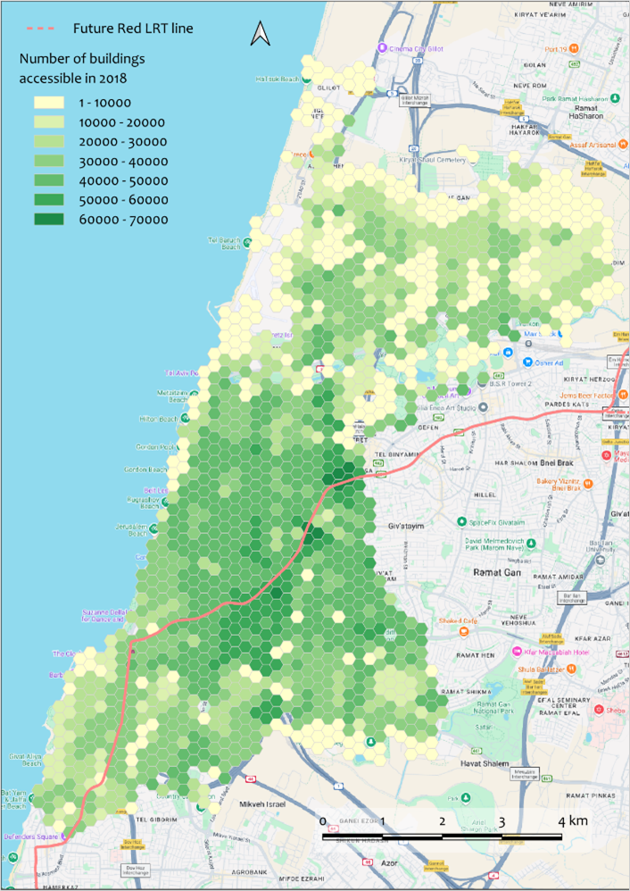
a
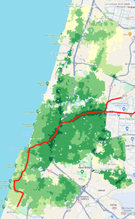
b
Figure 13. Maps of total number of buildings accessible in 45-minute transit trip, at a resolution of a 200m hexagon grid. The maps compare the road and traffic landscape in 2018 (a) versus 2024 (b).
9.6. Compare accessibility maps
The primary objective of this exemplary study is to assess the systemic effects of the new Red LRT line. Now that individual accessibility maps have been generated, we can directly compare the networks before and after the line was established. The Accessibility Calculator provides three specific measures of difference for this comparison: Ratio: Result_1/Result_2, Difference: Result_1 - Result_2 and Relative difference: [(Result_1 - Result_2)/Result 2]. For each of these three measures, the plugin generates the primary difference map alongside two supplementary maps:
Only in Scenario 1: Displays buildings that are accessible in Scenario 1 but inaccessible in Scenario 2 (Result_1 is not NULL, while Result_2 is NULL).
Only in Scenario 2: Displays buildings that are accessible in Scenario 2 but inaccessible in Scenario 1 (Result_2 is not NULL, while Result_1 is NULL).
9.6.1. Compare service area maps
Our first question is: “Did the Red LRT line increase accessibility for visitors arriving at the Gesher Theater by public transport?” To answer this, we compare the schedule-based TO-accessibility maps for Gesher (for a 20:00 arrival) between the years 2024 and 2018. We calculate the travel time difference using the formula:
Figure 14 visualizes the difference between these two scenarios, alongside the maps showing areas exclusively accessible in only one of the years.
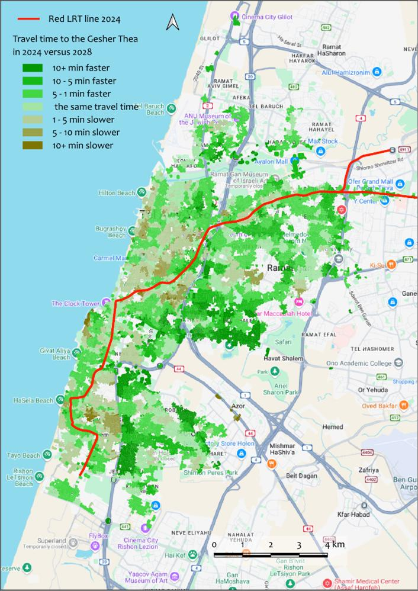
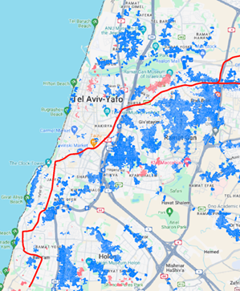
Figure 14. Comparison of transit TO-accessibility maps for Gesher Theater visitors arriving at 20:00 in 2018 versus 2024. Map (a) displays the absolute travel time difference, while map (b) highlights areas that are uniquely accessible in either 2018 or 2024.
As illustrated, the Red LRT line significantly improved transit accessibility for visitors arriving in time for the performance, though this improvement is not uniform across the entire city. In Figure 14a, the green shades denote buildings from which the transit travel time in 2024 is lower (faster) than in 2018; these improved zones cover approximately 60% of the overlapping area. For 20% of the buildings, the travel time remained effectively unchanged. For the remaining 20%, transit travel to the theater actually takes longer in 2024 than in 2018 (indicated by the brown shades), likely due to the restructuring of legacy bus routes. Importantly, however, the Red LRT line successfully made the Gesher Theater accessible within 45 minutes from vast geographic areas from which it was entirely inaccessible in 2018 (Figure 14b). Detailed explanation of these shifts can be retrieved directly from the full reports of the compared scenarios.
9.6.2. Compare fixed-time and schedule-based accessibility
To evaluate the specific impact of the schedule-based routing model, let us compare the schedule-based and fixed-time TO-accessibility maps for Gesher visitors (2024 network, 20:00 arrival). Figure 15 maps the travel time difference using the following formula:
As anticipated, schedule-based accessibility is consistently higher (i.e., it yields shorter travel times) than fixed-time accessibility, because the schedule-based model dynamically chooses the fastest trip and, in addition, eliminates the initial wait time at the first stop.
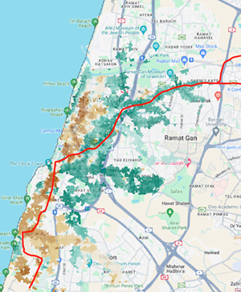
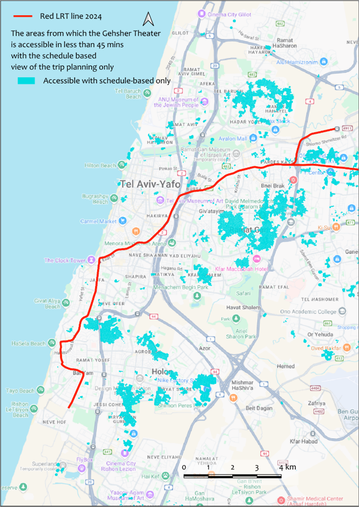
Figure 15. Comparison of the schedule-based and fixed-time accessibility maps for the Gesher Theater using the 2024 network. Map (a) shows fixed-time TO-accessibility at 20:00 with the 45-minute trip, and map (b) shows the additional areas from which Gesher is accessible at 20:00 with the 45-minute trip in case travelers’ route choice is adjusted to the PT schedule.
9.6.3. Compare cumulative number of opportunities maps
Comparing cumulative opportunities maps follows the exact same logic as comparing service area maps. Figure 18 illustrates the comparison between two FROM-accessibility maps (2024 vs. 2018) representing cumulative number of buildings accessible in 45 minutes starting at 08:00 in the morning (originally generated in Figure 13). As shown in Figure 16, the introduction of the Red LRT line substantially increased the number of accessible buildings. Greenish hexagons cover approximately 85% of the Tel Aviv area. However, for certain peripheral locations situated far from the new LRT alignment, the total number of accessible buildings actually decreased in 2024 compared to 2018. This reduction is a direct consequence of the extensive bus network modifications and cancellations implemented following the launch of the LRT.
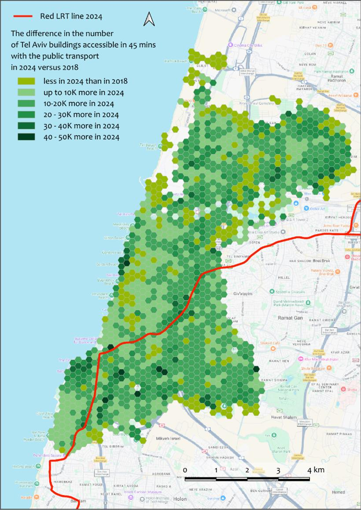
Figure 16. The spatial differences in regional FROM-accessibility via public transport (2024 vs. 2018) for the 45-minute morning trips that start at 08:00.